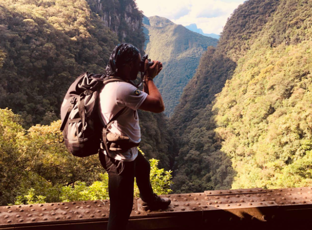
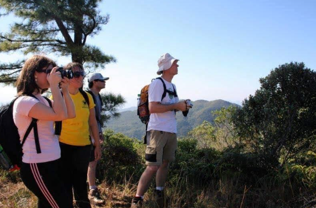
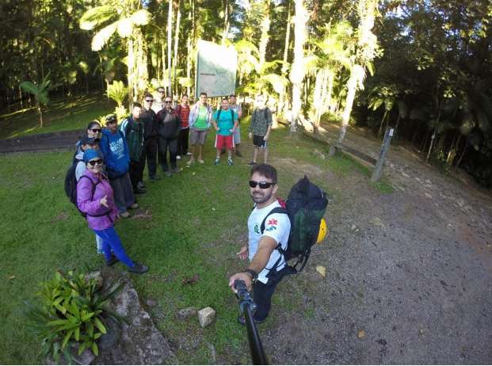
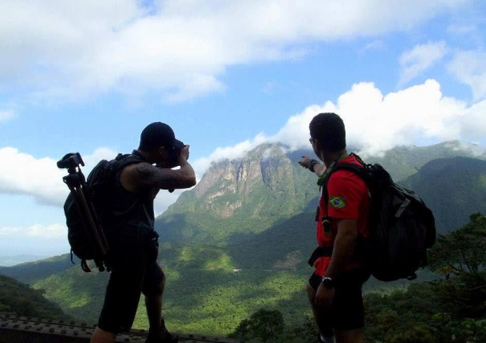

Detalhes do Roteiro
Início Sobre Nós Serviços Pacotes Atividades Contato Caminho do Ituapava Venha Conhecer Caminho do Itupava.
O Caminho do Itupava é uma das trilhas mais emblemáticas do Paraná, oferecendo uma imersão profunda na natureza e na história da região. Originalmente uma rota indígena, foi aberta por volta de 1625 e serviu como principal acesso entre o litoral e o planalto paranaense, sendo fundamental para o desenvolvimento do estado.
Hoje o Caminho do Itupava não tem mais função econômica, porém é um monumental sítio arqueológico que testemunha um precioso patrimônio cultural e natural, principalmente no trecho calçado, em plena Floresta Atlântica (Floresta Ombrófila Densa) na Serra do Mar, trecho que está em relativo estado de conservação.
Morretes: Nossa caminhada termina na localidade denominada Porto de Cima na base do IAP, onde seremos apanhados por nosso transporte e retornarmos a Curitiba via Estrada velha da Graciosa.
Tarifas
| Nº de pessoas | Guia bilíngue | Valor |
|---|---|---|
| 2 a 8 | Não | R$ 400,00 |
| 2 a 8 | Sim | R$ 475,00 |
Galeria de Fotos



